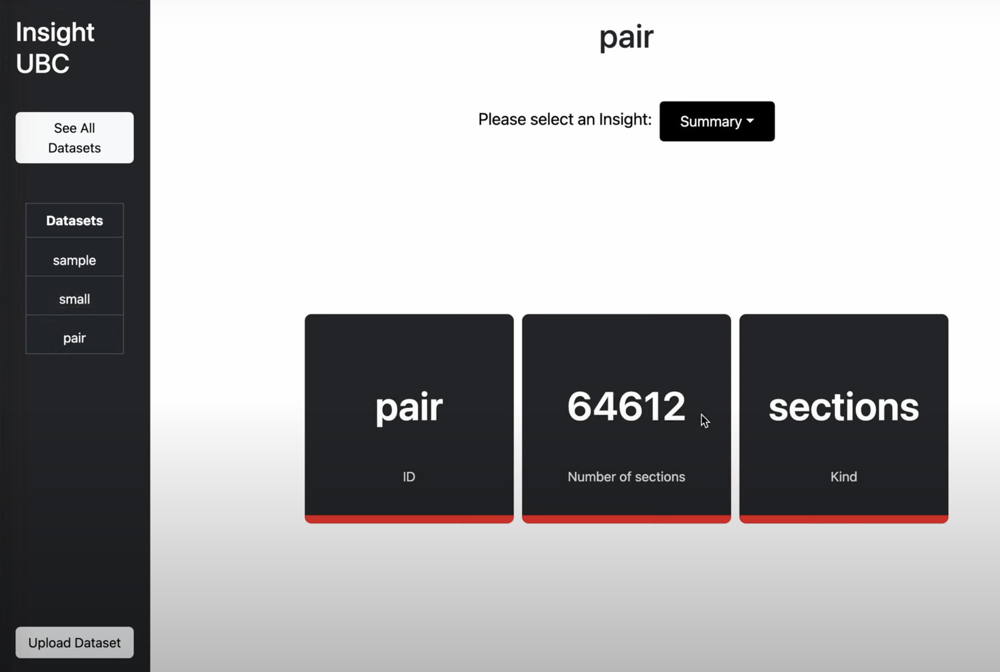

Introduction
I am someone who enjoys learning. The feeling when something finally clicks like a
puzzle
piece makes
the whole process of learning worth it.
As a fourth year computer science student at the University of British Columbia, I have been given
many opportunities to learn about a wide variety of topics
within and outside the field of computer science. From economics to religion, from applying linear
algebra to compress images to programming a whole C program
in assembly code, I found the process of learning from university to be a worthwhile one, even if it
was a little daunting.
This portfolio is filled with projects and work that I am proud of. Not because they are necessarily of the
highest quality, but because they represent
my growth in technical skills. These programming projects are often done during or after a course I
have taken and used to solidify what I have learned
and apply it in passion projects. It is my humble hope that one day the product of my learning can
be of use to many others.
Education
4th Year Student
Technical Experience
*currently acquiring

Insight UBC is a platform designed for managing historical data related to university courses and buildings. It facilitates user actions such as uploading, querying, and removing datasets seamlessly, and presents insightful statistics through interactive graphs.
It was against academic policy to post source code for this project, so we posted a video walkthrough of the final program instead.
This is the culmination of everything I had learned about relational databases. My group — partners D and H — set out to create a database program for a streaming service. We created a program that lets users, artists, and admins access and modify songs, playlists, albums, statistics, and finances without touching the database server directly.
The program begins with a login screen. After signing in, users reach a home page with recommended songs, a library to manage playlists, and a payment history section. Admins can also look up song statistics and provide artists with engagement data.
**The MySQL server is linked to a private account, so you cannot simply clone and run it.
My main focus was the library page — manipulating and displaying playlist and song data, including the UI and all database calls.
The first step was designing the schema. We normalized it and wrote SQL DDL statements. One challenge: our schema had nothing obvious to normalize, so we engineered a legitimate redundancy to perform 3NF normalization.
Tech stack: Java, Java Swing (UI), and JDBC (database). JDBC runs pre-made queries and returns arrays of strings or integers. Button clicks fire events that call query functions and update the UI.
Near the deadline, collaborating simultaneously with my partners on the user-defined query feature — coordinating function signatures, parameter types, and return values in real time — was one of the most special moments of the project. A genuine taste of team development.
Working with version control across a team, resolving merge conflicts, and coordinating on a shared codebase were invaluable experiences. Even the one slip-up where I deleted a script after a bad merge was a good learning moment.
This page is under construction. Check out another project or hit the dice icon above.
This page is under construction. Check out another project or hit the dice icon above.
I am a huge fan of volleyball. I have always considered it to be a simple sport, but after doing research I found the complex strategies to be fascinating. This game requires some volleyball strategy and intuition, as well as a bit of luck.
The first step was a working concept. I settled on representing the ball, court, game, teams, and players as classes with concrete subclasses for positions. The game would run through a repeated set of state transitions.
My real problems started with the UI. A synchronous linear program is fundamentally at odds with Java Swing's event-driven paradigm. A screen-whitening bug forced me to confront this. The fix: redesign around state — each button click transitions the game, rather than the program looping through functions.
I added a singleton logging class and a JSON reader/writer to persist game state across sessions.
I would fix the ball-animation timing bug, add a blocking system and proper player substitution, and explore a local or networked multiplayer mode.
This was my first big programming project — a massive exercise in problem solving, creative design, pride, and frustration. I gained hands-on experience with test-first design, OOP principles, and third-party libraries. Far from a work of art, but the first real step in becoming a developer.